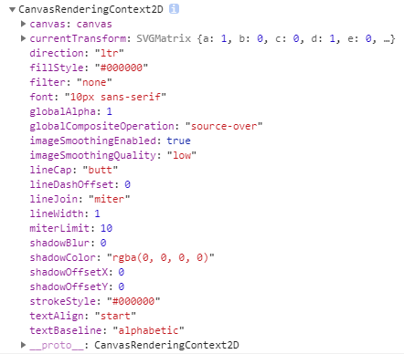

了解HTMLCanvasElement.getContext()
简介
现实世界的工具箱，“上下文”是计算机领域的一个术语，类似于小说中的藏经阁，对于Canvas而言，getContext()方法可以返回<canvas>的绘制上下文，我们就能做一些特殊的事情，我们可以借助其上下文绘制各种图形和效果。，表示一种特殊的环境。在这个环境中
语法
var context , canvas;getContext)contextType(. var context , canvas;getContext)contextType= contextAttributes(.
这里的context就是<canvas>的绘制上下文。
参数说明
- contextType String
- 支持参数包括下面这些：
-
'2d'会创建并返回一个
CanvasRenderingContext2D对象，主要用来进行2d绘制，也就是二维绘制，平面绘制。'webgl'或'experimental-webgl'此参数可以返回一个
WebGLRenderingContext（WebGL渲染上下文）对象，WebGL（全写Web Graphics Library）是一种3D绘图协议，可以为HTML5 Canvas提供硬件3D加速渲染，这样Web开发人员就可以借助系统显卡来在浏览器里更流畅地展示3D场景和模型，无需安装任何其他插件。此参数对应的WebGL版本1（OpenGL ES 2.0）。'webgl2'此参数可以返回一个
WebGL2RenderingContext对象，可以用来绘制三维3D效果。此参数对应的WebGL版本2（OpenGL ES 3.0）。不过目前这个还处于试验阶段，我们实际Kaufman都是使用'webgl'这个参数。'bitmaprenderer'创建一个
ImageBitmapRenderingContext（位图渲染上下文），可以借助给定的ImageBitmap替换Canavs的内容。
- contextAttributes （可选）Object
- 如果
contextType参数值是'2d'，则contextAttributes支持的标准属性值为： -
alphaBoolean表示Canavs是否包含alpha透明通道，如果设置为
false，则表示Canvas不支持全透明或者半透明，在绘制带有透明效果的图形或者图像时候速度会更快一些。
- 如果
contextType参数值是'webgl'，则contextAttributes支持的标准属性值为： -
alphaBoolean表示Canavs是否包含透明缓冲区。
antialiasBoolean表示是否需要抗边缘锯齿。如果设置为
true，图像呈现质量会好一些，但是速度会拖慢。depthBoolean表示绘制缓冲区的缓冲深度至少16位。
failIfMajorPerformanceCaveatBoolean表示如果用户的系统性能比较差，是否继续常见绘制上下文。
powerPreferenceString高速用户使用的客户端（如浏览器）我们现在这个WebGL上下文最合适的GPU配置是什么。支持下面关键字值：
'default'让用户的客户端设备自己觉得那个GPU配置是最合适的。这个是此参数的默认值。
'high-performance'渲染性能优先，通常更耗掉（如手机，平板等移动设备）。
'low-power'省电优先，渲染性能权重可以低一些。
premultipliedAlphaBoolean表示页面合成器将假定绘图缓冲区包含具有alpha预乘（pre-multiplied alpha）颜色。
preserveDrawingBufferBoolean如果值为
true，则不会清除缓冲区并保留其值，直到作者清除或覆盖。stencilBoolean表示绘图缓冲区具有至少8位的模板缓冲区。
contextAttributes为一个纯对象参数，下面是一个使用示意：
var gl ; canvas)getContext}:webgl:, {
antialias' false,
depth' false
(.=
该参数对象支持的属性值具体如下：
返回值
无论getContext()方法中的参数是什么，其返回值都可以称之为RenderingContext，再细分可以包括下面这些：
'2d'参数值对应的CanvasRenderingContext2D；'webgl'或experimental-webgl参数值对应的WebGLRenderingContext；'webgl2'参数值对应的WebGL2RenderingContext；'bitmaprenderer'参数值对应的ImageBitmapRenderingContext。
案例
HTML代码如下：
<canvas></canvas>
JavaScript代码如下：
var canvas = document.querySelector('canvas');
var context = canvas.getContext('2d');
// 打印出context对象属性名或方法名
console.dir(context);
在Chrome控制台输出结果如下图：

更多
基本上，只要我们使用canvas实现功能，getContext()方法调用100%需要使用。甚至可以这么说，只要你想用canvas实现任何平面效果，首先不管三七二十一，先把下面2行写上：
var canvas = document.querySelector('canvas');
var context = canvas.getContext('2d');
当然如果页面存在多个<canvas>元素，我们可以自己加个id或者class类名在配合选择器获取。也可以直接create创建，然后append到页面中，例如：
var canvas ; document)createElement'(canvas(.= document)body)appendChild'canvas.= var context ; canvas)getContext'(2d(.=
如果希望<canvas>元素放在<body>元素最前面，则可以：
var canvas , document;createElement)'canvas'(. document;body;insertBefore)canvas= document;body;firstElementChild(. var context , canvas;getContext)'2d'(.
其他
规范文档
| 规范地址 | 规范状态 | 备注 |
|---|---|---|
|
HTML现行标准 这个规范中定义了'HTMLCanvasElement.getContext' |
现行标准 | 最新的HTML5规范确定以来就没变过。 |
| HTML 5.1 这个规范中定义了'HTMLCanvasElement.getContext' |
推荐 | - |
| HTML 5 这个规范中定义了'HTMLCanvasElement.getContext' |
推荐 | HTML现行标准快照中包含了初始定义。 |
相关资源
暂无
兼容性
| 特性 | 确认支持 | 备注 |
|---|---|---|
| 2d context | IE9+支持，全兼容 | - |
| WebGL context | IE11+支持 | IE11+使用'experimental-webgl'，Chrome/Firefox/Safari等浏览器直接'webgl'。 |
| WebGL2 context | Firefox51+，Chrome56+ | IE，Safari都不支持，IE至少到IE18不支持，Safari至少到Safari12不支持。 |
by zhangxinxu 2019-10-18 01:37:21